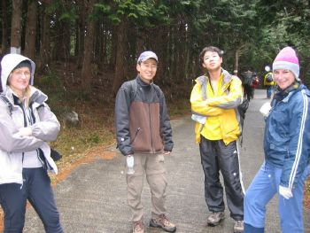
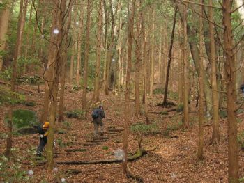
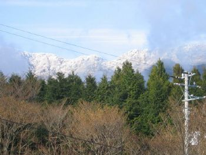
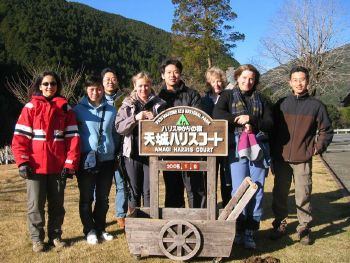
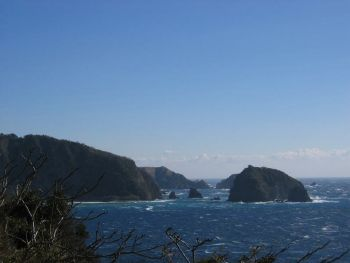
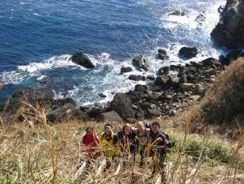

|  |
This year marks the third time I
organized this walk to Izu and there were so many unexpected
accidents this time.
On the first day, we were planning to climb Mt.Manjiro and Mansaburou-dake, but it started snowing as we neared the top by cars; and when we reached the top, the snow was covering the road and we had to give up the peaks. Instead we climbed lower Mt.Amagi, one of the best 100 mountains in Japan. Although the trail leading to the top turned out to be an asphalt covered road except the last 500m, people enjoyed the easygoing walk. Funny thing is, the road was marked as a hiking trail on the map. At around the dinner time the organizer (me) started feeling nausea and threw up three times during the night. I had to assign Shibuya-san to lead the second-day seaside walk and I had to rest at the youth hostel. When they got to the seaside trail, the trail turned out to be blocked by a landslide and they could enjoy only the first part of the trail. When they were having rest at flat rock formation on the seaside, very strong wind was constantly attacking them. The good news is, at least they could enjoy onsen on both days.
|
 | ||
|  |  | |||
|  |  |